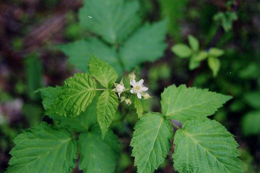

Thompson describes blackberries (to which black raspberries are closely related) as “universally regarded as the most wholesome and delicious wild berry found in the state” (Thompson 220). Wild berries are one of the most commonly picked wild plants. They are familiar and easy to identify, taste great in many forms, and have a long tradition of use. What Vermonter cannot recall berry picking with their family as a child?
Plants of the genus Rubus are called by the common name of brambles. Blackberries and their relations, including black raspberry, are part of this genus. Brambles are distinguished from raspberries and their relatives because the vines “ramble” instead of forming straight stalks. Black raspberry's fruits are smaller than raspberry's. They are tart when young, becoming sweeter when mature. The black raspberry has sweeter fruit than blackberry. Most berries contain high levels of disease-preventing antioxidants. In black raspberries these are anthocyanins and ellagic acid (Wikipedia).
Black raspberries are not the most cultivated berries in Vermont. Regular raspberries, strawberries, and blueberries surpass them by far, according to the website of the Vermont Vegetable and Berry Growers Association. This group is a resource available for cultivators in the state. They hold meetings and publish a newsletter, helping farmers share knowledge.
Because black raspberries are not a common cultivar, they are more familiar to us as a wild plant. The most enjoyable thing about berry picking is finding a patch on the trail and picking them as you ramble through the brambles. Picking in the wild is much more of a cultural experience. It creates a connection between the harvester and the land. It is this direct connection that makes black raspberry more ethnobotanically significant than more common, cultivated species.
